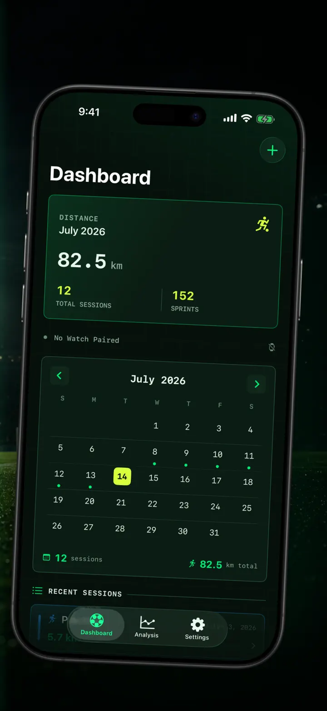
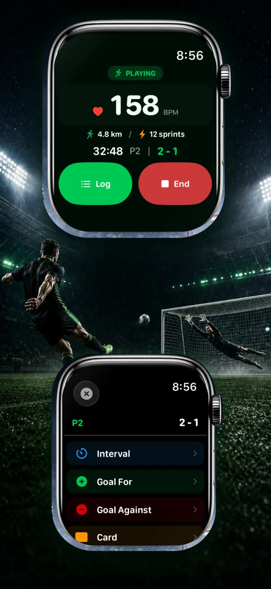
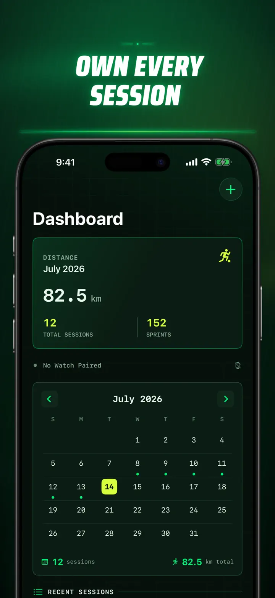
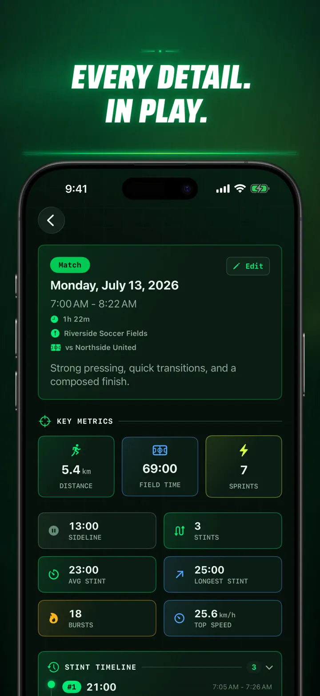
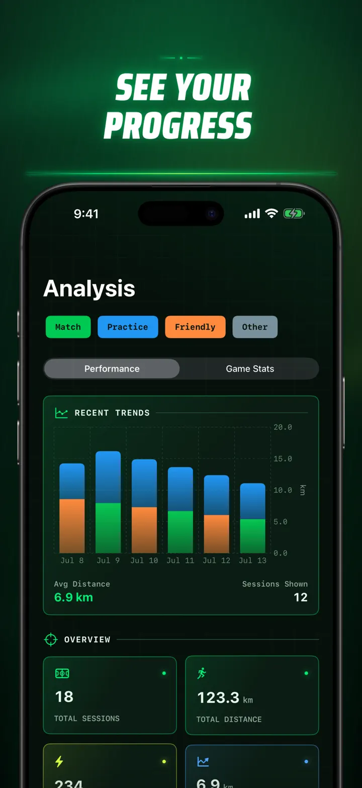
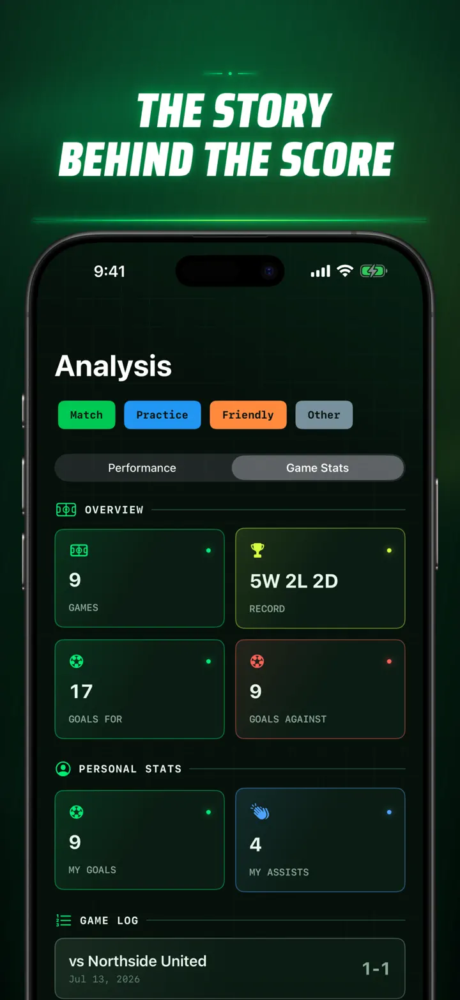
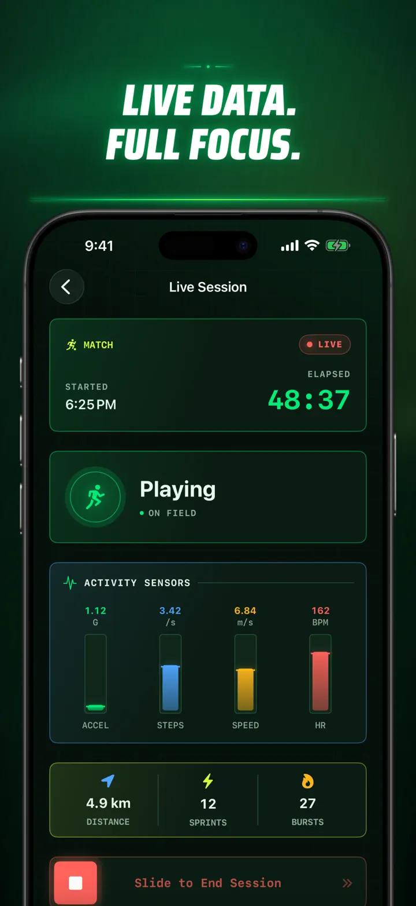
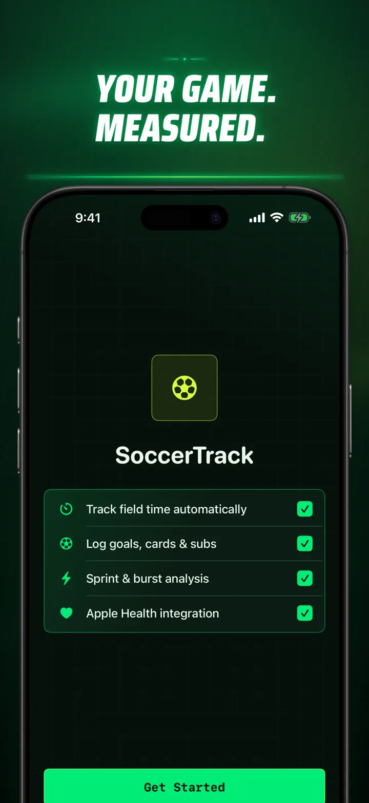

Soccer Time Track
Field Time & Match Analytics
Start a session, then play. Apple Watch automatically separates field time from sideline time and captures live metrics, sprint analysis, match events, and trends.
Download on the App StoreAbout the app
See your game differently.
Soccer Time Track turns Apple Watch into a match-day tracker for players who want to understand more than the final score. Start from your wrist, focus on the game, then review a detailed picture of your performance on iPhone.
AUTOMATIC FIELD TIME
Know when you were in the action. Motion, workout, and location signals help distinguish playing, low-activity, and sideline periods, giving you:
- Field time and sideline time
- Stints and a clear session timeline
- A detailed breakdown of how your session unfolded
MATCH DAY, FROM YOUR WRIST
Choose Match, Practice, Friendly, or Other. As the game unfolds, record:
- Goals for and against
- Your goals and assists
- Yellow and red cards
- Substitutions and period markers
YOUR GAME, MEASURED
Go beyond minutes with performance metrics including:
- Distance
- Average and maximum speed
- Sprints and high-intensity bursts
- Heart rate and active calories
- Cadence and acceleration
LIVE DATA, FULL FOCUS
A paired iPhone can display live session metrics while Apple Watch keeps the workout running. You stay focused on the match while your data takes shape in the background.
SEE YOUR PROGRESS
Review matches, practices, friendlies, and other sessions in one history. Explore trends and personal records, compare sessions, and add team details, your jersey number, opponents, locations, and notes to preserve the story behind each result.
Need your data elsewhere? Export sessions, stints, and match events in CSV or JSON format.
BUILT FOR APPLE WATCH AND APPLE HEALTH
With your permission, Soccer Time Track uses workout, heart rate, motion, and location data to create session insights and save completed soccer workouts to Apple Health. Automatic tracking requires Apple Watch. You can also add a session manually on iPhone.
YOUR DATA, YOUR GAME
Your sessions stay on your devices and, when iCloud Sync is on, in your private iCloud database. There is no Soccer Time Track account, no advertising, and no third-party analytics.
Stop guessing how much you played. Start seeing what you did with it.
Privacy Policy: https://masawata.net/SoccerTimeTrack/privacy-policy.html Terms Of Service: https://www.apple.com/legal/internet-services/itunes/dev/stdeula/
Screenshots








Soccer Time Track
Start a session, then play. Apple Watch automatically separates field time from sideline time and captures live metrics, sprint analysis, match events, and trends.
Download on the App Store